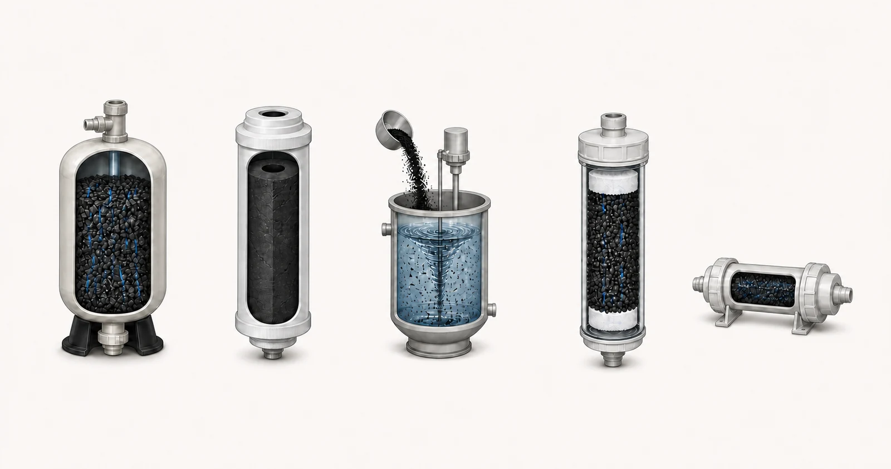

Câu trả lời trực tiếp
GAC, CTO, PAC, UDF và T33 mô tả các dạng vật liệu, cấu tạo lõi lọc hoặc vị trí trong hệ thống khác nhau. GAC là than hoạt tính dạng hạt dùng trong bình hoặc lõi lọc. CTO thường chỉ lõi lọc than khối, còn UDF thường được dùng để chỉ lõi lọc than dạng hạt. T33 thường mô tả lõi lọc than xử lý tinh ở công đoạn cuối, lắp trực tiếp trên đường ống. PAC là than hoạt tính dạng bột được châm vào nước và loại bỏ ở công đoạn phân tách sau đó. Những tên gọi này không chứng minh một tuyên bố về khả năng loại bỏ chất nào và không có nghĩa là các dạng có thể thay thế lẫn nhau. Việc lựa chọn phải gắn báo cáo nước và hợp chất mục tiêu với điều kiện tiếp xúc, lưu lượng, tổn thất áp suất, kiểm soát hạt, kích thước thiết bị, khả năng tiếp cận để bảo trì và bằng chứng hiện có cho vật liệu cùng cấu tạo được đề xuất.

- Vật liệu GAC dùng trong bình
- Khối than CTO
- Châm PAC
- Lõi lọc than dạng hạt UDF
- Lõi lọc xử lý tinh T33 lắp trực tiếp trên đường ống
Hình minh họa khái niệm. Không phải kết quả thử nghiệm, chứng nhận sản phẩm hoặc bản vẽ kỹ thuật.
Bắt đầu từ vấn đề của người mua
Bên mua OEM có thể cần lõi lọc thay thế nhỏ gọn, công đoạn xử lý tinh để cải thiện vị của nước lắp trực tiếp trên đường ống hoặc vật liệu rời cho bình xử lý lớn hơn. Người thiết kế hệ thống công nghiệp có thể đang so sánh lớp GAC cố định với quy trình châm PAC. Các tên gọi có thể trông như những cấp bậc sản phẩm, nhưng chúng mô tả những cách khác nhau để đưa nước tiếp xúc với than. Vì vậy, phép so sánh hữu ích cần dựa trên chức năng: than nằm ở đâu, nước đi qua hoặc đi quanh than như thế nào, mức độ tiếp xúc có được và cách phát hiện, thay thế than đã cạn khả năng hấp phụ.
Chi tiết kết nối và cấu tạo quan trọng không kém tên vật liệu. Lõi lọc than khối có thể kết hợp hấp phụ với đặc tính lọc vật lý và có thể tạo ra đặc tính áp suất khác với lớp hạt rời. Lõi lọc dạng hạt cần lưới hoặc tấm đệm để giữ vật liệu và kiểm soát hạt mịn. Bộ T33 lắp trực tiếp trên đường ống phải phù hợp với đầu nối, hướng lắp và nhiệm vụ xử lý tinh cuối cùng. PAC cần được châm, trộn, tiếp xúc và phân tách chất rắn ở phía sau; PAC không được lắp như một lõi lọc thông thường cho nước chảy xuyên qua.
Cần cung cấp báo cáo và dữ liệu vận hành nào
Hãy mô tả ứng dụng trước khi nêu tên dạng sản phẩm. Thông tin sau giúp nhà cung cấp quyết định dự án cần vật liệu cho bình, lõi lọc có thể thay thế, bộ xử lý tinh lắp trực tiếp trên đường ống hay một quy trình châm riêng.
- nước nguồn và toàn bộ kết quả phân tích hiện có
- hợp chất mục tiêu hoặc tiêu chí cảm quan và mục tiêu đầu ra cần đạt
- lưu lượng trung bình và cực đại, thời gian vận hành hằng ngày và chế độ vận hành gián đoạn hoặc liên tục
- kích thước vỏ lọc, bình, đầu nối và lõi lọc sẵn có
- tổn thất áp suất cho phép khi bộ lọc còn sạch và khi đạt giới hạn kết thúc sử dụng
- độ đục, chất rắn lơ lửng, TOC hoặc COD và các điều kiện sinh học liên quan
- các công đoạn xử lý phía trước và phía sau
- khả năng tiếp cận để thay thế, phương pháp xử lý chất thải và kế hoạch giám sát
Báo cáo cần đủ mới để đại diện cho nguồn nước dự kiến và nên nêu ngày cùng vị trí lấy mẫu. Nếu nước thay đổi theo mùa, lô sản xuất hoặc trạng thái vận hành, hãy cung cấp khoảng biến động thay vì một kết quả được chọn cho thuận tiện. Nêu riêng mục tiêu nước sau xử lý cần đạt và kết quả phân tích hiện tại. Khi chưa biết một giá trị, hãy ghi rõ là chưa biết; một khoảng trống được thể hiện rõ an toàn hơn một con số phỏng đoán.
Thông tin thủy lực cần được xem xét cùng thông tin hóa học. Chỉ dùng lưu lượng trung bình có thể che khuất các đợt lưu lượng cực đại ngắn, chế độ vận hành gián đoạn và thời gian nước lưu đọng kéo dài. Cần xác nhận thời gian vận hành hằng ngày, nhu cầu cực đại, áp suất sẵn có, tổn thất áp suất cho phép, kích thước thiết bị và người chịu trách nhiệm giám sát, thay than. Những chi tiết này quyết định liệu một vật liệu vốn có vẻ phù hợp có thể được sử dụng trong hệ thống có thể vận hành và bảo trì hay không.
Cơ sở lựa chọn
Xem xét phương án GAC trong bình khi dự án có thể bố trí lớp vật liệu được xác định rõ, bộ phân phối, tải trọng thủy lực, việc lấy mẫu và công tác bảo trì hoặc thay vật liệu. Xem xét phương án lõi lọc dạng hạt khi cùng dạng vật liệu đó phải phù hợp với vỏ lọc cho phép thay lõi ở quy mô nhỏ hơn nhiều. Không thể so sánh các ứng dụng này chỉ bằng khối lượng vật liệu vì hình học lớp vật liệu, phân phối dòng chảy, nguy cơ dòng đi tắt và thời gian tiếp xúc khác nhau.
Sử dụng CTO hoặc cấu tạo than khối khác khi dạng lõi lọc yêu cầu, đặc tính giữ hạt và đặc tính áp suất tương thích với hệ thống. Khối lượng riêng của khối than, hệ chất kết dính, kích thước và tính nhất quán trong sản xuất trở thành một phần của quá trình đánh giá. Tên gọi than khối không chứng minh khả năng giảm chất ô nhiễm; cấu tạo và điều kiện đã được thử nghiệm phải làm căn cứ cho mọi tuyên bố cụ thể công bố ra bên ngoài.
Chỉ sử dụng T33 để mô tả vị trí trong hệ thống sau khi xác nhận bộ lắp trực tiếp trên đường ống được kỳ vọng xử lý tinh yếu tố nào và nước đi vào bộ đó có đặc điểm gì. Sử dụng PAC khi quy trình bao gồm châm có kiểm soát và phân tách sau đó. Hiệu quả PAC phụ thuộc vào liều lượng, việc trộn, tiếp xúc, các chất cạnh tranh và việc loại bỏ bột đã qua sử dụng. Không nên đưa PAC vào thay thế trong thiết kế cho nước chảy xuyên qua chỉ vì PAC cũng là than hoạt tính.
Bối cảnh tiền xử lý, thiết bị và vận hành
Phép so sánh cần bao gồm toàn bộ diễn biến áp suất và các công việc bảo trì trong hệ thống. Hệ thống lõi lọc cần xác minh kích thước, bề mặt làm kín, hướng lắp và khả năng tiếp cận để thay thế. Hệ thống bình cần đánh giá bộ phân phối và hệ thu nước đáy, khoảng không cho lớp vật liệu giãn nở khi áp dụng rửa ngược, các điểm lấy mẫu và kế hoạch xử lý vật liệu đã qua sử dụng. Hệ thống PAC cần lưu trữ an toàn, thiết bị châm, việc phân tán bột và một công đoạn ngăn giữ, loại bỏ chất rắn.
Tiền xử lý có thể làm thay đổi quyết định. Hàm lượng chất rắn cao có thể gây tắc lõi lọc hoặc chiếm thể tích lớp vật liệu; chất hữu cơ tự nhiên có thể cạnh tranh với chất mục tiêu; chất oxy hóa và điều kiện sinh học ảnh hưởng đến chiến lược vận hành và bảo trì. Dạng sản phẩm được lựa chọn sau khi xác định các rủi ro này, không được dùng để che lấp dữ liệu nước còn thiếu. Khi đó, Yuchen Water có thể lựa chọn các phương án cung ứng và vỏ lọc liên quan hoặc hỗ trợ thiết bị phù hợp với nhiệm vụ đã được đánh giá.
Những sai lầm thường gặp
- Sử dụng GAC và UDF như thể chúng luôn chỉ các loại than có đặc tính hóa học khác nhau
- Coi CTO là bằng chứng cho một tuyên bố cụ thể về clo hoặc chất ô nhiễm
- Gọi mọi lõi lọc than lắp trực tiếp trên đường ống là T33 mà không kiểm tra nhiệm vụ và kết nối
- Sử dụng PAC trong quy trình không có công đoạn phân tách phía sau
- So sánh các dạng theo giá mua trong khi bỏ qua áp suất, công tác bảo trì và giám sát
Bằng chứng và phạm vi dịch vụ
So sánh dạng sản phẩm không phải là tuyên bố chứng nhận. Chứng nhận gắn với sản phẩm được liệt kê và tuyên bố thuộc chương trình liên quan, không áp dụng cho mọi mặt hàng có cùng dạng chung. Tương tự, kết quả thử nghiệm gắn với vật liệu và cấu tạo đã được thử nghiệm. Nội dung công bố ra bên ngoài phải giữ nguyên mối liên hệ đó và tránh chuyển kết quả của sản phẩm dạng hạt, dạng khối hoặc dạng lắp trực tiếp trên đường ống sang sản phẩm thuộc dạng khác.
Yuchen Water có thể cung cấp vật liệu và lõi lọc với các cấu tạo khác nhau, đồng thời hỗ trợ đánh giá tính phù hợp với thiết bị. Dạng sản phẩm, thông số kỹ thuật, số lượng và kế hoạch thay thế cuối cùng chỉ được xác nhận sau khi xem xét báo cáo nước, kích thước, yêu cầu vận hành thủy lực và mục tiêu xử lý. Nếu bên mua vẫn đang xác định thiết bị, kết quả đầu tiên nên là định hướng kỹ thuật và danh sách thông tin đầu vào còn thiếu, thay vì lựa chọn mặt hàng quá sớm.
Yuchen Water xem xét mục tiêu và bằng chứng trước, sau đó xác định dạng than phù hợp và những vấn đề về vật liệu cần làm rõ, nhu cầu tiền xử lý và thiết bị hỗ trợ, cùng những tài liệu hoặc thử nghiệm vẫn còn cần thiết. Kết quả có thể là định hướng sơ bộ, yêu cầu bổ sung thông tin hoặc khuyến nghị về vật liệu và thiết bị có cơ sở. Khuyến nghị không được đưa ra chỉ vì người mua đã cung cấp tên sản phẩm.
Sau khi cung cấp sản phẩm, hỗ trợ kỹ thuật có thể bao gồm xác nhận tài liệu, giải đáp về lắp đặt và súc rửa, hướng dẫn chạy thử đưa vào vận hành từ xa, các điểm giám sát và lập kế hoạch thay thế trong phạm vi đã thỏa thuận. Hiệu quả thực tế vẫn phụ thuộc vào vật liệu được phê duyệt, hệ thống thiết bị đầy đủ, nước nguồn, việc lắp đặt, vận hành và bảo trì. Hướng dẫn đã công bố không thể thay thế việc đánh giá dự án.
Không cam kết về vật liệu cuối cùng, dung lượng xử lý, tuổi thọ sử dụng, tỷ lệ loại bỏ hoặc kết quả dự án trước khi xem xét báo cáo, cấu tạo, bằng chứng và điều kiện vận hành.
Nguồn kỹ thuật chính thức
Các nguồn này giải thích nguyên lý xử lý hoặc giới hạn phạm vi chứng nhận. Các nguồn này không chứng nhận sản phẩm của Yuchen Water và không thay thế bằng chứng riêng cho từng dự án.
Hướng dẫn liên quan về than hoạt tính
Tiếp tục tìm hiểu nhóm tài liệu kiến thức, rà soát bằng chứng của các mẫu được chọn chỉ trong phạm vi giới hạn đã nêu, so sánh các dạng sản phẩm hoặc gửi báo cáo để đánh giá kỹ thuật.